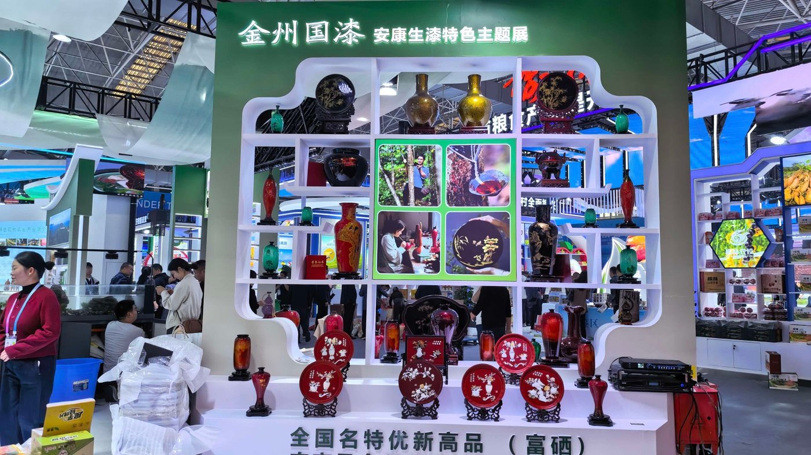
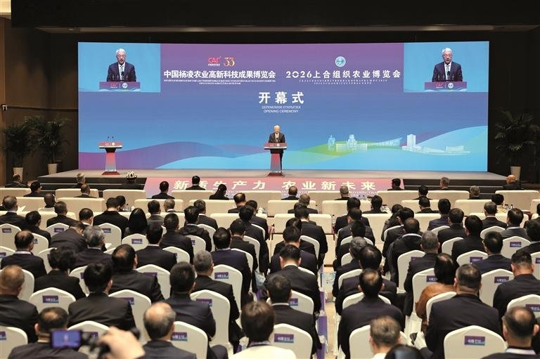
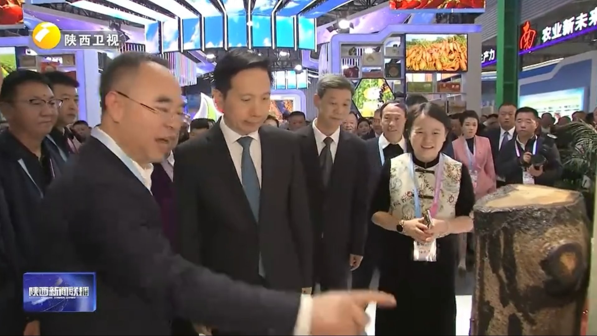
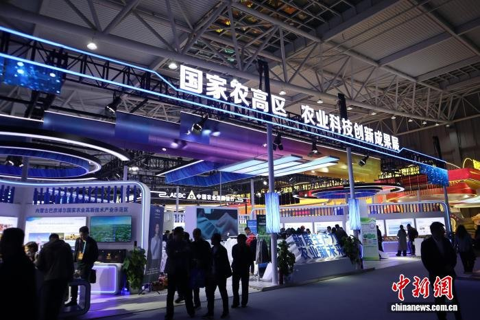

On 25 October, the 33rd China Yangling Agricultural Hi-tech Fair opened in Yangling, Shaanxi. The Ankang pavilion featured the dedicated "Jinzhou Guqi · Ankang Raw Lacquer" exhibition, presenting Pingli Longtou Guqi products and the provincial intangible heritage Niuwang raw lacquer techniques. On opening day, Provincial Party Secretary Zhao Yide and Governor Zhao Gang toured the fair and visited the Ankang pavilion.

An Autumn Gathering in the City of Agricultural Science
On 25 October, the 33rd China Yangling Agricultural Hi-tech Fair and the 2026 SCO Agricultural Expo opened together in Yangling under the theme "New Quality Productive Forces, New Future for Agriculture". Vice Chairman Wang Guangqian declared the fair open, Provincial Party Secretary Zhao Yide delivered a speech, and Governor Zhao Gang presided over the ceremony. The five-day fair brought together more than 2,000 enterprises from 51 countries and regions, with a total exhibition area of 140,000 square metres across indoor, field, online and overseas sections. As a signature of Shaanxi agriculture, Ankang organised more than 60 selenium-rich specialities for the fair, with a 187-square-metre pavilion in Hall B presenting the brand of "Qinba Premium, Selenium-rich Ankang".

The Jinzhou Guqi · Ankang Raw Lacquer Exhibition
Inside the Ankang pavilion, the dedicated raw lacquer booth stood out — the "Jinzhou Guqi · Ankang Raw Lacquer" themed exhibition showcased Pingli Longtou Guqi products and the provincial-level intangible cultural heritage of Niuwang raw lacquer techniques. On display were red-and-gold lacquer vases, carved lacquer plates, traditional ornaments, as well as raw and refined lacquer materials. The warm glow of coloured lacquer and the delicacy of carved work drew a steady stream of visitors, giving many their first close look at why "a hundred li, a thousand cuts, one jin of lacquer" is so precious, and at the quality of Qinba Niuwang lacquer. From tree cultivation, tapping and refining to finished lacquering, Longtou Guqi presented its complete industry chain at this national agricultural event.
Provincial Party Secretary Visits the Ankang Pavilion
On opening day, Provincial Party Secretary Zhao Yide and Governor Zhao Gang toured the Shaanxi Characteristic Modern Agriculture Exhibition. At the Baoji, Yan'an, Hanzhong, Ankang and Shangluo pavilions, kiwifruit, Luochuan apples, Hanzhong rice, selenium-rich foods and Zhashui wood ear mushrooms were on full display. Zhao Yide and Zhao Gang heard reports on industry scale, sales and brand building, emphasising deeper processing of agricultural products and risk-sharing, benefit-sharing mechanisms so that industrial growth and farmers' income rise together. The Ankang raw lacquer booth where Longtou Guqi's works were exhibited drew continuous streams of guests and buyers, adding a striking touch of "Chinese lacquer colour" to the pavilion.

Shaanxi's Answer in Raw Lacquer
Shaanxi is one of China's great raw lacquer provinces: 1.195 million mu of cultivated lacquer trees and 60% of national raw lacquer output. At this fair, the supply-and-marketing pavilion dedicated a themed section to the raw lacquer industry under the title "Fine Lacquer of Qin", presenting the historical lineage of Qin lacquer, the industry's foundations and the everyday revival of lacquer culture, with special exhibitions and industry forums during the fair. Zhengdaming Cultural Industry Group has worked in Qinba lacquer for 12 years, with more than 5,000 mu of lacquer tree bases in Ankang, Enshi, Chengkou, Shangluo and Zhuxi, employing more than 600 people through a "company + cooperative + farmer" model and increasing per-capita annual income by over 50,000 yuan — a complete chain from tree to finished work.

Lacquer as a Bridge to the Fields Ahead
Since 1925, when the lacquer merchant Yuan Yongling founded the "Zhengdaming" shop and traded "Niuwang" lacquer, letting Chinese lacquer be seen by the times again has been the belief of generations. Presenting at the Yangling fair is both a showcase of the Qinba raw lacquer industry and a dialogue between lacquer and the new quality productive forces of agriculture. Going forward, Zhengdaming will continue to rely on the Qinba raw lacquer industry to deepen the integration of heritage, industry, science and creativity, letting lacquer trees and lacquer craft step out of the mountains, into great fairs and into daily life.